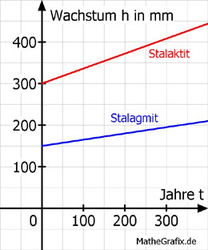

Lineare Funktionen Aufgabe 106 Eine Tropfsteinhöhle ist 4 m hoch. Von oben wachsen Stalaktiten mit einer Zunahme von 0,36 mm/Jahr nach unten. Von unten wachsen Stalagmiten mit 0,15 mm/Jahr nach oben. a) Ein Stalaktit ist im Jahr 2010 300 mm lang. Wie viel mm ist seine Spitze nach 100 Jahren vom Boden entfernt? b) Ein Stalagmit ist im Jahr 2010 150 mm hoch. Vor wie viel Jahren begann sein Wachstum? c) Wie viele Jahre würde es dauern, bis der Stalaktit 400 mm lang ist? a) Die Funktion des Wachstums h abhängig von der Zeit t lautet: Für den Stalaktiten. h = 0,36 * t + 300 Für den Stalagmiten: h = 0,15 * t + 150  Im Jahr 2010 ist der Stalaktit 4 000 mm - 300 mm = 3 700 mm vom Boden entfernt. Entfernung vom Boden nach 100 Jahren: H = 3700 - 0,36 * 100 = 3700 - 36 = 3 664 mm b) 0 = 0,15 * t + 150 | - 150 - 150 = 0,15 * t | :0,15 t = - 1 000 Jahre Sein Wachstum begann vor 1 000 Jahren. c) 400 = 0,36 * t + 300 | - 300 100 = 0,36 * t | :0,36 t = 278 Jahre